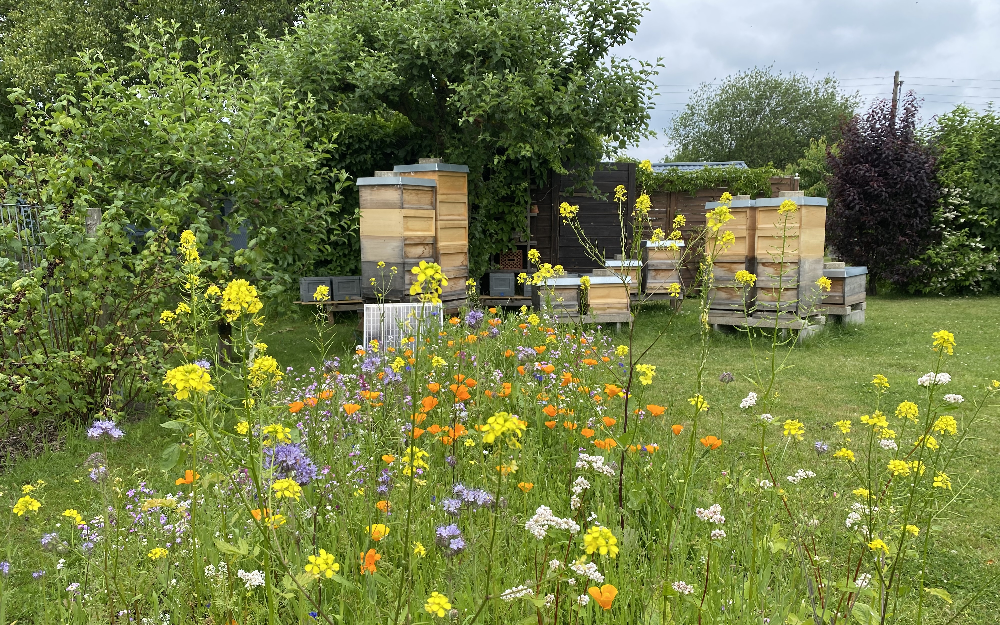

{% extends 'base.html' %}

{% block title %}Naturbienen.de{% endblock %}

{% block extra_css %}
    <!-- Plotly.js library -->
    <script src="https://cdn.plot.ly/plotly-latest.min.js"></script>
{% endblock%}

{% with active_link="index" %}
{% endwith %}

{% block header %}
    <div class="header">
        <div class="header-content">
            <h1>Naturbienen</h1>
        </div>
    </div>
{% endblock %}


{% block content %}
    <h2>Willkommen auf meiner kleinen Website</h2>
    <p></p>

    <article>
        <h3>Aktuelles</h3>
        <p>
            Der Frühtrachthonig 2025 ist abgefüllt und ab jetzt erhältlich.
            Mehr Infos gibt es <a href="{% url 'honig' %}">hier</a>.
        </p>
    </article>

    <article>
        <h3>Bienenstand Billwerder</h3>
        
        <p>

        </p>
    </article>

    <article>
        <h3>Bienenstand Horner Marsch</h3>
        
        <p>
        </p>
        <h3>Königinnen Zucht</h3>
        
    </article>
   
{% endblock %}